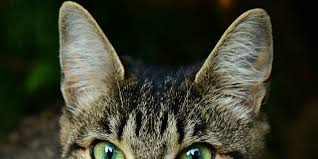

Fun Facts About Cats and Dogs
Cats can retract their front claws, allowing them to stay silent while walking.
Tails help with balance and communication in cats.
Cats' noses have unique patterns, much like human fingerprints.

Cats can rotate their ears 180 degrees to detect sounds from all directions.
Cats
- Cats spend approximately 70% of their lives sleeping.
- Cats have a remarkable ability to rotate their ears 180 degrees.
- A group of cats is called a clowder.
- The world's oldest cat lived to be 38 years old!
Dogs
- Dogs have a sense of time and can anticipate routine events.
- A dog's sense of smell is approximately 100,000 times stronger than humans'.
- The Basenji dog breed is known as the "barkless dog".
- The world's smallest dog breed is the Chihuahua, while the largest is the Irish Wolfhound.
- The nose print of dogs, cats, and other animals is unique – much like a human fingerprint.
- Dogs are not colorblind. They have dichromatic vision, meaning they have limited color perception and can only see shades of blue and yellow.
- House cats share 95.6% of their genetic makeup with tigers. They also share similar behavior habits like scent marking, urine marking, prey stalking, and pouncing.
- Dogs have about 1,700 taste buds compared to humans with 9,000. They can taste sweet, sour, salty, and bitter.
- The whiskers on a cat aren’t just cute—they serve a crucial function in assisting cats with navigating their surroundings, especially at night. Think of them as kitty radar.
- Greyhounds can beat cheetahs in a race over a longer distance. While cheetahs can run twice as fast as greyhounds, they can only maintain that speed for about thirty seconds. Greyhounds can maintain 35 mph for about seven miles.
- Disneyland in California has feral cats that help control the rodent population.
- The Bloodhound's sense of smell is so accurate that its tracking results can be used as evidence in a court of law.
- Yawning is contagious—even for dogs. Research shows that the sound of a human yawn can trigger one from a dog, and it’s four times more likely to happen when it's the yawn of a person he knows.